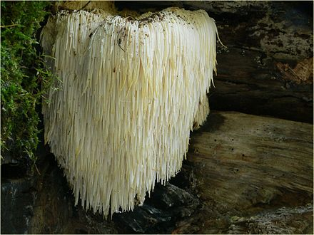
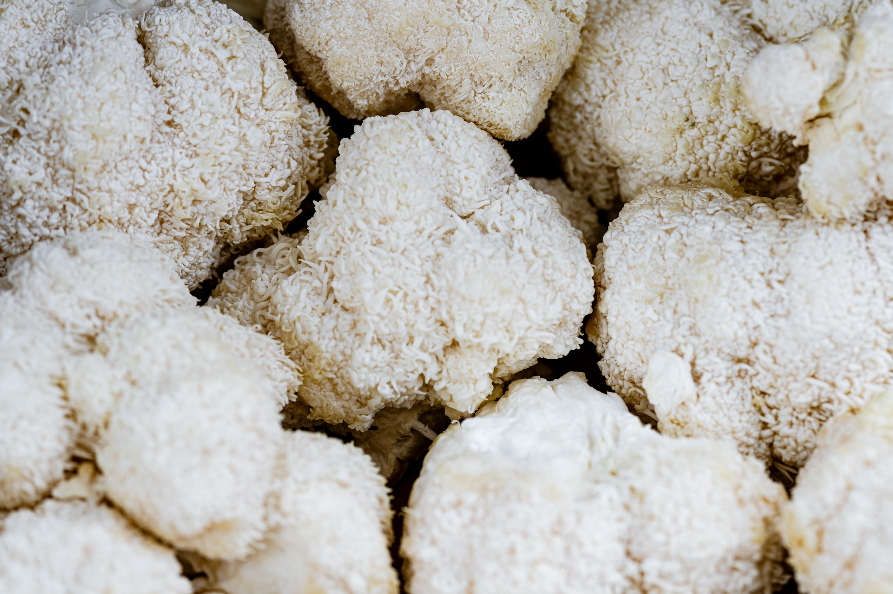

Lion's Mane Mushroom
Everything You Needed to Know
Introduction
Hericium erinaceus (also called lion's mane mushroom, mountain-priest mushroom or bearded tooth fungus) is an edible mushroom belonging to the tooth fungus group. Native to North America, Europe and Asia, it can be identified by its long spines (greater than 1 cm length), occurrence on hardwoods, and tendency to grow a single clump of dangling spines. The fruit bodies can be harvested for culinary use.
Hericium erinaceus can be mistaken for other species of Hericium, which grow across the same range. In the wild, these mushrooms are common during late summer and fall on hardwoods, particularly American beech and maple. Usually H. erinaceus is considered saprophytica, as it mostly feeds on dead trees. However, it can also be found on living trees, so may be a tree parasite. This could indicate an endophytic habitat.
Morphology
The fruitbodies of H. erinaceus are large, irregular bulbous tubercules. They are 5–40 cm (2–15.5 in) in diameter, and are dominated by crowded, hanging, spore-producing spines, which are 1–5 cm long or longer. Fruit bodies and spines colour are white to cream, but can turn yellow-brown when older.
The hyphal system is monomitic, amyloid, and composed of thin- to thick-walled hyphae that are about 3–15 microns (um) wide. The hyphae also contain clamped septa and gloeoplerous elements (filled with oily, resinous substances), which can come into the hymenium as gloeocystidia.
The basidia are 25–40 um long and 5–7 microns wide, contain four spores each and possess a basal clamp. The white amyloid basidiospores measure around 5–7 um in length and 4–5 um in width. The spore shape is described as subglobose to short ellipsoid and the spore surface is smooth to finely roughened.
Development
The fruitbodies of H. erinaceus are mainly produced annually from August to November in Europe. It was observed that H. erinaceus could fruit intermittently for 20 years on the same dead tree. It is hypothesized that H. erinaceus can survive for 40 years. The mating system of H. erinaceus species found in the USA was shown to be bifactorially heterothallic.
The monokaryotic mycelium growth of H.erinaceus is slower than dikaryotic growth and only about a low percentage of monokaryotic cultures yield fruitbodies. Monokaryotic fruitbodies are also smaller than dikaryotic fruitbodies. The monokaryotic mycelium was found to produce fusoid to subglobose chlamydospores of 6–8 x 8–10 um size. These spores can stay viable for more than seven years and be stored under anaerobic conditions. Chlamydospore germination requires 30 to 52 hours, with a germination success rate of 32 to 54%.
Spore production is highest at midday, relative to temperature increase and relative humidity decrease. Daily trends towards lower relative humidity can favor sporulation, however levels of relative humidity that are too low do not favor high total spore production.
Distribution
Hericium species can be found throughout the northern hemisphere. Hericium erinaceus has been used in traditional Chinese medicine for centuries and its production is widespread within Asia, mostly using extensive production practices on wood logs or stumps.
Despite its higher prevalence in Asia, H. erinaceus was first described in North America. Its production there occurs only on a small scale. Most of it is intensive indoor production with only a few small outdoor sites where log cultivation is practiced. Three Hericium species can be found in eastern North America, one being H. erinaceus, the other two H. americanum and H. coralloides.
Although H.erinaceus is native to Europe, it has been red listed in 13 European countries due to poor germination and establishment. This specific genus fruits between August and December in the United Kingdom, and will continue to produce spores until as late as February in the following year. It is able to withstand cold temperatures and frost conditions.
Conservation
Hericium erinaceus is scarce and threatened and is one of only four fungi to have the highest level of legal protection in the UK, making both picking and sale of the fungus illegal.
Strains and Yield
In fungi cultivation, fungal strains are analogous to plant varieties in crop breeding. Fungal strains comprise clonal descendants of a single isolation from one fungal colony in a pure culture. Hericium spp. grow in the wild in North America, Europe and Asia and, although there is considerable scientific research about them, they are not commonly industrially produced. Accordingly, there are few commercially available strains in the USA or Europe and little or no breeding for higher yield or other favorable traits has occurred. Production trials in Egypt report yields of H. erinaceus averaging at 165g per 1 kg medium.